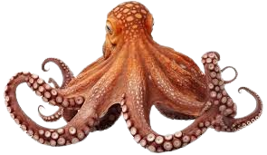
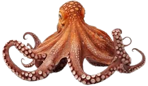

Swimming with sharks is a thrilling and adventurous activity that allows individuals to experience the majesty of these powerful marine creatures in their natural habitat. This daring pursuit often takes place in crystal-clear .
Deep Blue
Dose
Welcome to our digital oasis, where the ocean is more than a view,it's a deep blue dose of vitality for the soul. Dive into the soothing embrace of maritime wonders, where each wave carries the promise of renewal. Discover the healing energy of the sea as you navigate through our curated collection of aquatic inspiration. Let DBD be your portal to a world where the ocean's deep blue hues become a restorative elixir for mind, body, and spirit.
Vitamine Sea
It's hard to find a beach on Lefkada Island that doesn't have spectacular views of the crystal-clear Ionian Sea, but Egremnoi (or Egremni) on the west coast is particularly stunning. Reaching the sand requires a steep hike down a long set of stairs, but you'll enjoy the view the whole way down. You will have to climb back up eventually, but it's worth it to spend all day swimming in the turquoise waters and sunning on the sugar-white sand.

The deep blue waters that fill the caldera of the sunken volcano Mount Mazama make Crater Lake one of America's most beautiful lakes. There are no incoming streams or rivers to interfere with the clarity of the lake, the deepest in all of the United States at 1,943 feet. Visit this national park in Oregon to walk along the Rim Trail, where you'll be able to appreciate the natural wonder, but know that swimming is allowed only at the access point on the Cleetwood Cove Trail, which opens in late June.

Many legends have surrounded this enigmatic lagoon in Jamaica, from tall tales of resident dragons to rumors that it is bottomless — although its depth of about 200 feet has been confirmed. Still, all agree it is one of the most beautiful places in Jamaica because it boasts some of the clearest water in the world. The lagoon, just east of Port Antonio, is a perfect place to explore and recharge. The water's color can range in shade from turquoise to royal blue depending on the time of day, and the lake is fed by a mix of underground freshwater springs and saltwater from the Caribbean Sea.

Sometimes it feels like the best views are the ones you have to work for, and it does take some work to get to Devil's Bay on Virgin Gorda in the British Virgin Islands. After you scrabble through the gem-colored Baths, a scenic point where large boulders form picturesque caves, you'll emerge on the tiny, picture-perfect slice of white sand known as Devil's Bay. Pack your snorkel and enjoy the clear turquoise Caribbean waters.

A two-hour drive from the industrial capital city of Zagreb lies a natural wonder in the middle of Croatia— Plitvice Lakes National Park. A UNESCO World Heritage site since 1979, this forest is covered with 16 turquoise blue lakes and the innumerable waterfalls that connect them. A wooden walkway winds through the park's upper and lower lakes giving visitors the chance to wander alongside and even over the tops of crystalline lakes and waterfalls. Swimming is not allowed in the lakes, but with the beaches of the Dalmatian Coast not too far away, you should still pack your swimsuit.
A short boat ride from the largest barrier reef outside of Australia, Belize's Ambergris Caye is a scuba diver's and snorkeler's paradise. Head to Shark Ray Alley to snorkel among nurse sharks and stingrays; visit Hol Chan Marine Reserve to get up close with eels, turtles, and colorful fish; or explore the underwater caves of Blue Hole. You will also find some of the world's top resorts on the Caye, where you can book an overwater bungalow and start every day with a dip.
Spectacular waterfalls tumble into the brilliantly blue lakes at this UNESCO World Heritage Site in China's Sichuan province. The park's most famous attraction is the Five-Flower Lake — the startlingly blue water offers a window-like view to the bottom where fallen trees make a lace pattern on the lake floor. The water is so still and clear it mirrors the surrounding mountains and trees as well as the sky above.
Although it's just a quick flight from Manila, Palawan feels a world away. The sparsely populated archipelago is made up of jungle-filled islands surrounded by stunning teal waters and offering an array of lagoons, coves, and secret beaches. Explore the waters of El Nido, where tropical fish swarm around the coral reefs, go diving in the azure ocean off Linapacan Island, or bravely swim through one of the world's longest underground rivers.
With some of the world's best islands, it's no surprise that the Maldives is a favorite destination for travelers who want to be surrounded by the clearest water in the world. This island nation, located between the Indian and Arabian seas, is known for luxuriously appointed resorts with bungalows set over dazzling blue waters with talcum-soft white-sand beaches. Visitors can spend their days exploring the coral reef, visiting an underwater playground, or relaxing in one of the world's best spas.
Find your escape
Scuba diving opens a gateway to an enchanting world beneath the ocean's surface, a realm where vibrant marine life and breathtaking underwater landscapes come to life. As you descend into the depths,.
55 euro for 1H
Welcome to your virtual aquarium. For further details on any aquatic animal, click on it.


 

About us
Deep Blue Dose, your ideal companion for an unforgettable beach adventure! At DBD, we are passionate about discovering extraordinary beach destinations and organizing captivating activities that will help you create memorable moments. Whether you're a relaxation enthusiast, a water sports aficionado, or an intrepid explorer, our website offers a diverse range of travel options and seaside activities. Immerse yourself in paradisiacal beaches, explore stunning underwater sites, and indulge in our carefully curated selection of excursions and entertainment. Our dedicated team is driven by the desire to provide you with an exceptional beach experience, combining relaxation, adventure, and discovery. Join us on this coastal escapade and let us guide you towards enchanting horizons. Your dream beach journey begins here, with DBD.